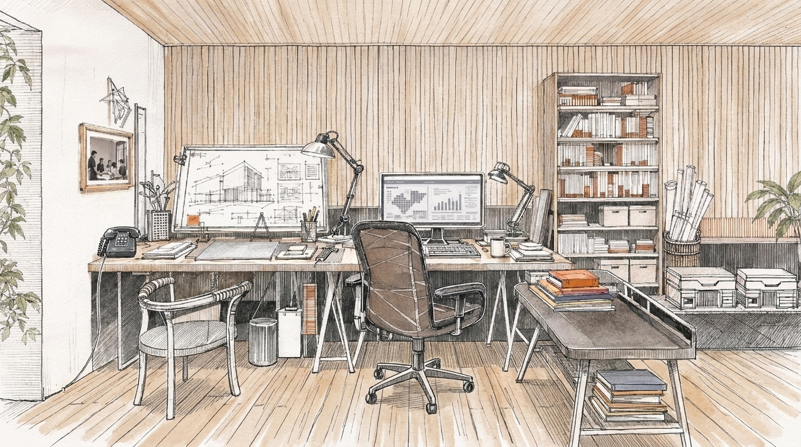

Foto studio,
tim, nilai,
dan cerita
kami.
Papan tulis proyek.
Klik untuk melihat
daftar portofolio desain.
Komputer studi & riset.
Klik untuk membuka
daftar riset, lab studi,
feasibility study dashboard,
dan tautan GitHub.
Rak dokumen.
Klik untuk melihat
sejarah studio,
publikasi, arsip,
dan dokumen penting.
Klik untuk
mendengar
suara telepon
dan melihat
informasi
kontak.